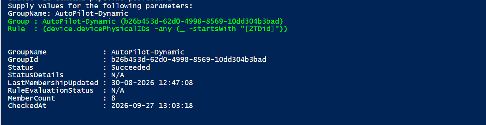

Audit Microsoft Entra ID Dynamic Groups using Microsoft Graph API and PowerShell
Summary
Audit Microsoft Entra ID Dynamic Groups using Microsoft Graph PowerShell. Retrieve membership processing status, last evaluation details, and current member count for Intune and Autopilot troubleshooting. The account running the script must have Group.Read.All and GroupMember.Read.All

By default, the script has only registered Microsoft Graph and SharePoint Online Microsoft AAD apps (with their respective appId property). Feel free to add any other API listed here in the AadApis class!
# User Input
$api = "Microsoft Graph" # Or "SharePoint"
$permission = "Sites.Read.All" # Can be "Read" if seeking more permissions
# Connect to Microsoft 365
if ($(m365 status) -match "Logged Out") {
m365 login
}
# Configure the CLI to output as JSON on each execution
$m365output = m365 cli config get --key output
if ($m365output -notmatch "json") {
m365 cli config set --key output --value json
}
# Get CLI commands JSON output converted as objects
function Get-CLIValue {
[cmdletbinding()]
param(
[parameter(Mandatory = $true, ValueFromPipeline = $true)]
$input
)
$output = $input | ConvertFrom-Json
if ($null -ne $output.error) {
throw $output.error
}
return $output
}
# Dedicated class to store Azure AD (AAD) Enterprise Microsoft Apps as valid param inputs
class AadApis : System.Management.Automation.IValidateSetValuesGenerator {
[String[]] GetValidValues() {
$Global:aadApis = @{
"SharePoint" = "00000003-0000-0ff1-ce00-000000000000"
"Microsoft Graph" = "00000003-0000-0000-c000-000000000000"
}
return ($Global:aadApis).Keys
}
}
# Method to get delegated or application permissions from a registered AAD MS App, based on name
function Get-AADPermission {
[cmdletbinding()]
param(
[parameter(Mandatory)]
[ValidateSet([AadApis], IgnoreCase = $false)]
$ApiName,
[parameter(Mandatory)]
$PermissionName,
[parameter(Mandatory = $false)]
[Switch]$Delegated,
[parameter(Mandatory = $false)]
[Switch]$Application
)
try {
$sp = m365 aad sp get --appId ($Global:aadApis)[$ApiName] | Get-CLIValue
if ($Delegated) {
$permissionsInfo = $sp.oauth2PermissionScopes | Where-Object { $_.value -match $PermissionName }
}
elseif ($Application) {
$permissionsInfo = $sp.appRoles | Where-Object { $_.value -match $PermissionName }
}
else {
throw "Please define if seeked permission is a delegated (-Scope) or an application (-Role) one"
}
if ($permissionsInfo) {
Write-Host "AAD app info:"
Write-Host ($sp | Select-Object id, appId, displayName | Format-List | Out-String)
Write-Host "-----------"
Write-Host "Permissions info:"
foreach ($perm in $permissionsInfo) {
Write-Host ($perm | Format-List | Out-String)
}
}
else {
$permissionType = (&{If($Delegated -eq $true) {"Delegated"} Else {"Application"}})
Write-Warning "No $($permissionType) permission named [$($PermissionName)] found for $($ApiName) App"
}
}
catch {
Write-Error $_.Exception
}
}
# Run the command
Get-AADPermission -ApiName $api -PermissionName $permission -Application
Check out the CLI for Microsoft 365 to learn more at: https://aka.ms/cli-m365
Important changes coming to the way you login into CLI for Microsoft 365 (effective 9th September 2024) see Changes in PnP Management Shell registration in Microsoft 365
Contributors
| Author(s) | |
|---|---|
| Sujin Nelladath | (https://www.linkedin.com/in/sujin-nelladath-8911968a/) |
Disclaimer
THESE SAMPLES ARE PROVIDED AS IS WITHOUT WARRANTY OF ANY KIND, EITHER EXPRESS OR IMPLIED, INCLUDING ANY IMPLIED WARRANTIES OF FITNESS FOR A PARTICULAR PURPOSE, MERCHANTABILITY, OR NON-INFRINGEMENT.